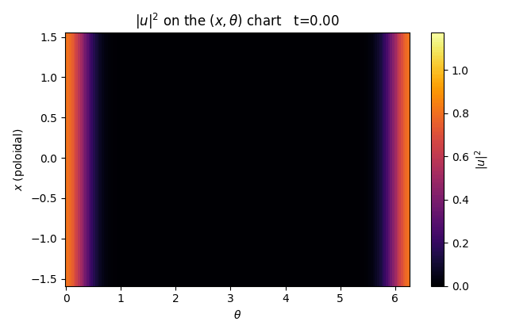
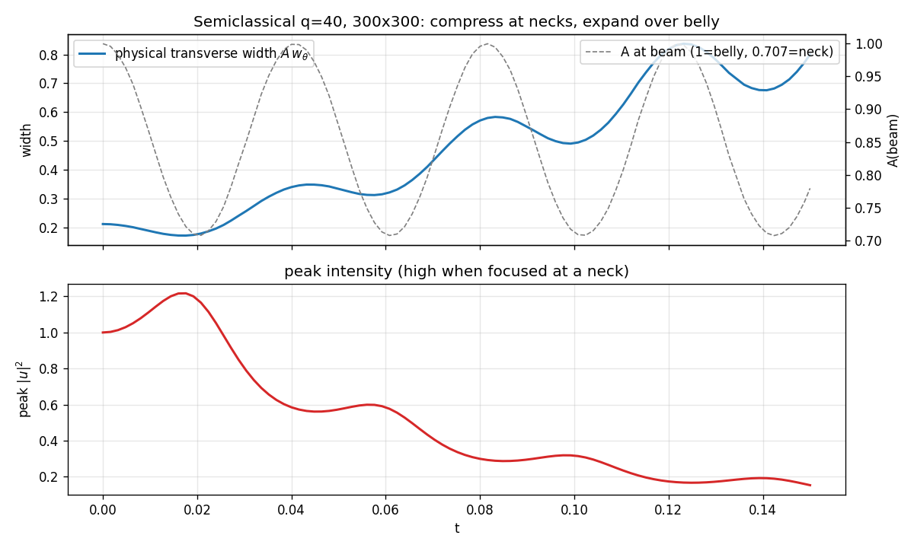
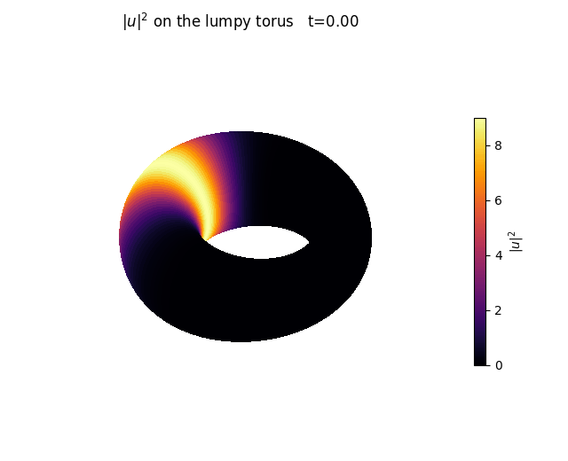
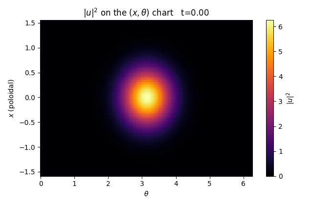

NLS on the Lumpy Torus
Nonlinear Schrödinger evolution on a surface of revolution with metric ds² = dx² + A(x)²dθ², A(x)=√((1+cos²x)/2). Mass-conserving Laplace–Beltrami assembly, Crank–Nicolson time-stepping, Picard nonlinear solve. A Python companion to the lumpy-torus study. All 3-D frames are rendered on the metric-faithful crescent immersion.
01Geometry & curvature
One period x∈[−π/2, π/2] (ends identified) has exactly one elliptic geodesic (belly, K=+0.5) and one hyperbolic (neck, K=−1).

02Why it works — the centrifugal-barrier reduction
Separating u = e^{ikθ}φ(x) turns Laplace–Beltrami into a 1-D Schrödinger operator with effective potential V_k(x)=k²/A² — the same centrifugal barrier as the atomic radial equation. Both the quantum modes and the classical geodesics live on this well/barrier structure.


03Solver validation

04The field on the lumpy torus


05Geodesic stability (linear)


06Running over the bumps: the meridian beam



07Semiclassical beam



08Self-trapping via focusing nonlinearity
On the stable equator a θ-symmetric ring reduces to 1-D — subcritical, so focusing can self-trap it into a soliton (the meridian, lacking a transverse trap, only disperses or collapses).



09Other regimes



10Background & references
The experiment sits on a well-worn thread of geometry and physics — the reduction to a centrifugal-barrier problem is the same structure that appears across these lines of work.
- Whispering-gallery modes — Lord Rayleigh, The Problem of the Whispering Gallery (1910); realized in ultra-high-Q optical microtoroid resonators: Armani, Kippenberg, Spillane & Vahala, Nature 421, 925 (2003).
- Quasimodes / Gaussian beams on stable geodesics — Ralston, Comm. Math. Phys. 51, 219 (1976); Babich & Buldyrev, Asymptotic Methods in Short-Wavelength Diffraction Theory.
- NLS on compact manifolds — Burq, Gérard & Tzvetkov, Amer. J. Math. 126, 569 (2004).
- Self-trapping, necklaces & collapse — Soljačić, Sears & Segev, Phys. Rev. Lett. 81, 4851 (1998); mass-critical blow-up universality: Merle & Raphaël, Invent. Math. 156, 565 (2004).
- Attractive BEC analogue (Gross–Pitaevskii; bright soliton; "Bosenova" collapse) — Donley et al., Nature 412, 295 (2001).
- Integrable geodesic flow on surfaces of revolution — Clairaut's relation A²θ′ = const (classical).